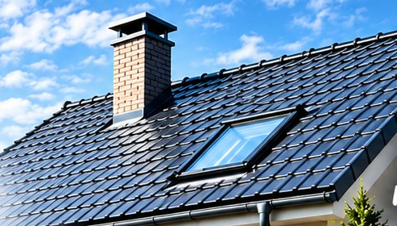

Toiture
Couverture à Savigny-sur-Orge
Pose, rénovation et réparation de tous types de toitures.
- Tuiles mécaniques et plates
- Ardoises naturelles
- Zinc et bac acier
Couverture•Zinguerie•Rénovation•Ravalement
Une entreprise de confiance pour tous vos travaux de toiture et de rénovation à Savigny-sur-Orge et dans toute l'Essonne.
Pose, rénovation et réparation de tous types de toitures : ardoises, tuiles, zinc, bac acier…
Pose, rénovation et réparation de tous types de toitures.
Gouttières, chéneaux, habillages, étanchéité et finitions.
Rénovation complète de votre toiture, de la charpente à la couverture.
Nettoyage, traitement et remise en état de vos façades.
Diagnostic de la fuite, remplacement des tuiles cassées, reprise des solins.
Élimination des mousses et lichens pour prolonger la durée de vie du toit.
Protection de vos tuiles contre l'humidité et l'encrassement.
Isolation des combles et sous toiture pour plus de confort et d'économies.
Création ou remplacement de fenêtres de toit avec raccords étanches.
Rejointoiement de souche, solins et chapeaux de cheminée.
Réparation, renforcement et traitement des bois de charpente.
Membranes d'étanchéité pour toits plats, terrasses et garages.
Contrôle, remplacement des tuiles abîmées et vérification des points sensibles.
Débouchage et nettoyage des gouttières et descentes pour un bon écoulement.
Couverture, zinguerie, rénovation et ravalement : nous prenons en charge vos travaux de A à Z, pour les particuliers comme pour les professionnels.
Conseils honnêtes, devis clair et détaillé, chantier propre et respect des délais : c'est notre façon de travailler.
Un travail soigné, des résultats durables ! Demander mon devis
Nous intervenons rapidement à Savigny-sur-Orge et dans les communes voisines de l'Essonne (91).
4 rue de Charaïntru, 91360 Épinay-sur-Orge
Décrivez-nous votre projet, nous vous recontactons rapidement.